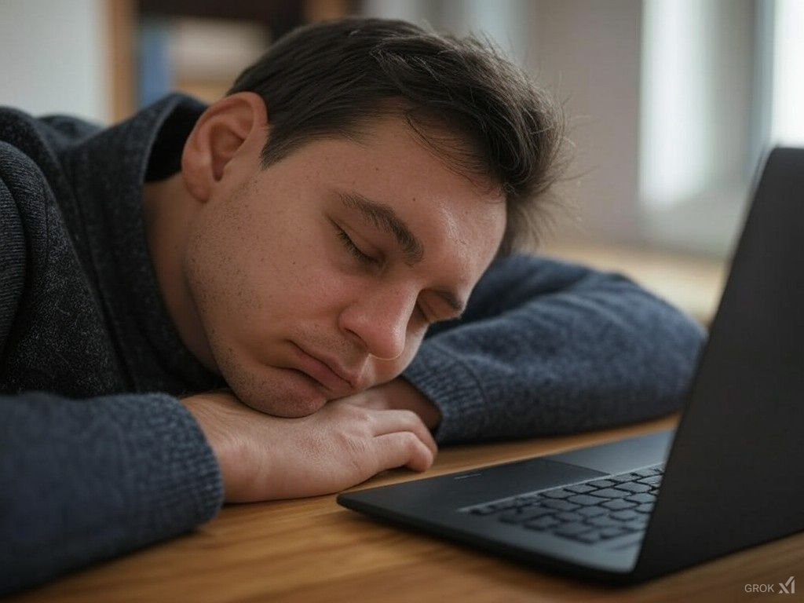

מחשבות של 12 בלילה מול מסך מחשב, כשהעייפות מנצחת את הרצון לסיים עוד משהו קטן ברשימה האינסופית של ה- לקרוא / ללמוד / לבנות
פורסם במקור ב LinkedIn
מחשבות של 12 בלילה מול מסך מחשב, כשהעייפות מנצחת את הרצון לסיים עוד משהו קטן ברשימה האינסופית של ה- לקרוא / ללמוד / לבנות
מה אם היינו יכולים לחיות יותר - עם פחות שעות שינה?
דמיינו רגע: יום אחד, בזכות טכנולוגיה חדשנית, אנחנו כבר לא צריכים לישון 8 שעות כדי להרגיש "טעונים". אולי 4 שעות יספיקו.
כלומר לקום אחרי 4 שעות רעננים ונינוחים כאילו הרבצנו שינה של 11 שעות. בלי לפגוע באיכות החיים.
איך זה היה משנה את חייכם?
במשך דורות, השינה נתפסה כצורך ביולוגי בלתי ניתן למיקוח. ה"מטען האנושי" שלנו דורש לפחות שליש מהיום כדי לתפקד כמו שצריך. אבל למה, בעצם?
אנחנו הרי לא טלפונים חכמים.
אבל גם הטלפונים החכמים במשך תקופה ארוכה בקושי החזיקו למשך יום מבלי להטעין אותם, והיום ניתן להגיע תוך שעתיים מסוללה ריקה ל-80% טעינה עם מטען מהיר סטנדרטי.
האמת היא ששינה היא הרבה יותר מהטענה—היא סוג של "תחזוקה עצמית". המוח מעבד מידע, מתקן נזקים, מנקה רעלים.
אבל מה אם הביולוגיה הזו, שעוצבה לפני עשרות אלפי שנים, לא באמת מתאימה לעולם שלנו יותר?
תחשבו על זה: עם התקדמות AI, ננו-טכנולוגיה וביולוגיה סינתטית, אנחנו כבר חוקרים דרכים לעקוף את המערכת. אולי בעתיד הלא רחוק, גלולה קטנה או תהליך ביולוגי יאפשרו למוח שלנו להשלים את כל מה שהוא צריך - במחצית הזמן.
מה נעשה עם 4 שעות נוספות ביום?
נלמד כישורים חדשים? נבלה יותר עם המשפחה? אולי סתם נהנה מעוד זמן לקרוא, לכתוב, או פשוט להיות?
אבל רגע, יש גם צד שני.
אם שינה היא הפסקה חשובה, מה יקרה אם נבטל אותה כמעט לגמרי? האם נרגיש שהחיים שלנו עמוסים יותר? האם זה יוביל לקריסה מסוג חדש?
בסופו של דבר, השאלה היא לא רק "כמה זמן אנחנו ישנים" אלא איך אנחנו חיים.
אז בואו נחשוב קדימה: האם אנחנו משתמשים בזמן שיש לנו היום בצורה חכמה?
אם היו נותנים לכם 4 שעות בונוס ביום - מה הייתם עושים איתם?
אני יודע שאצלי אישית הBACKLOG הפרטי היה מתקצר משמעותית 😇
